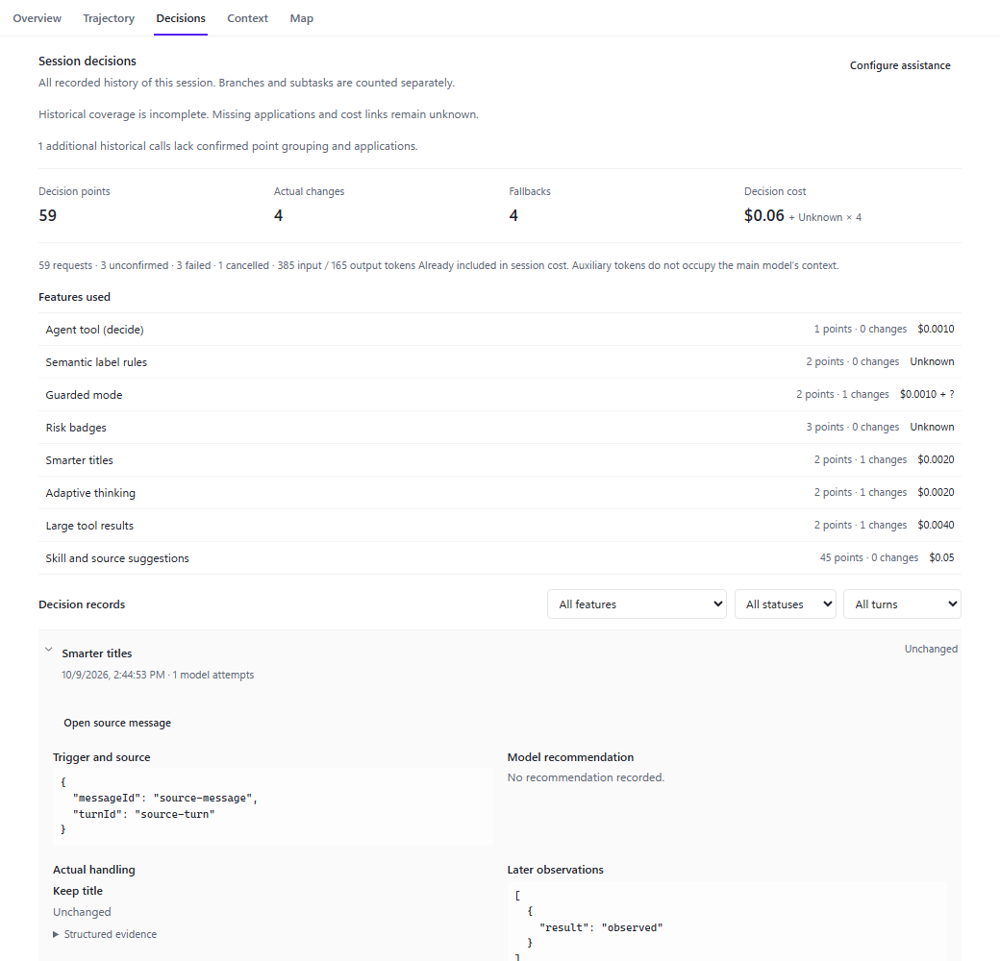

为什么现在看起来「简陋」
当前实现（SessionDecisions.tsx，148 行单文件）已经把所有事实都取回来了，问题在于它把事实平铺成了一条灰色长列：
所有文字都在 11–12px、所有分区都用同一条 border-y 分隔、所有状态都只是右对齐的一行灰字。
信息没有层次，也就没有可读性；不需要改数据契约，只需要重建信息架构与视觉系统。
- 层级缺失标题、指标、功能分布、记录、详情共用同一字重与字号，视线没有落点。
- 控件是原生的三个裸
<select>并排；没有筛选态、计数或清除入口。 - 数字不可扫
1 points · 0 changes $0.0010计数与金额混排，未对齐、未用等宽数字。 - 状态没有编码
changed只有紫色文字，其余状态一律灰字，无法一眼区分失败 / 回退 / 未确认。 - 详情是 JSON 倾倒触发来源直接
<pre>{JSON}，可读信息被噪声淹没。 - 未知被写成文字
$0.06 + Unknown × 4拼在数字后面，不是状态，也无法对齐。 - 展开即挤压详情内联展开把下方内容推走，再看下一条要重新找位置。
- 空 / 错误态是一行灰字设计文档 §9 要求的 16 种状态，目前只有三四种有像样的表达。
下面三个方向共用同一份 fixture 数据（取自现有验收截图：59 事项 / 4 改变 / 4 回退 / $0.06 + 4 次未知 / 8 项功能 / 59 次请求）。
切换方向只会换信息架构，不会换数据 —— 这样比较的才是设计，不是数据。
顶部「状态逻辑」可以在修正后与现状之间切换：切到「现状」后，
「已应用但未改变基线」的记录会像今天一样把 trajectory.decisions.status.applied 这串键名直接漏在界面上；
带请求层失败 / 取消的记录也会一律显示成「未确认」。
链接可分享，参数：?dir=A|B|C&width=420&theme=light|dark&lang=zh-Hans|en&state=ready|empty|loading|error|unsupported|disabled|nomatch|nosession&legacyStatus=1&view=panel
三个方向怎么选
| 维度 | A · 台账 Ledger | B · 时间流 Stream | C · 决策板 Board |
|---|---|---|---|
| 一句话 | 列表即索引，详情在旁；选择而非展开。 | 按轮次分组的活动流，就地展开。 | 先看功能对比矩阵，再看记录表。 |
| 420–560px 窄面板 | 好 · 列表↔详情整屏切换，返回位置保留 | 很好 · 单列天然适配 | 中 · 需把表降级为双行卡片 |
| ≥ 820px 宽面板 | 很好 · 真正的左右主从 | 中 · 单列会显得空且行过长 | 很好 · 表格列全部展开 |
| 记录很多（50+） | 好 · 列表密排 + 分页 | 中 · 流很长，靠轮次分组缓解 | 很好 · 表格 + 排序 |
| 跨功能对比 | 中 · 功能条只有占比 | 弱 · 被时间顺序打散 | 很强 · 矩阵直接横向比 |
| 回到聊天证据 | 详情内一个按钮 | 展开卡片内一个按钮 | 抽屉内一个按钮 |
| 实现成本 | 高 · 新增选择态、详情面板、两套布局 | 低 · 现有结构加层级与分组 | 高 · 新增表格、排序、抽屉 |
| 回归风险 | 中 · 键盘与焦点需要重做 | 低 · 交互模型不变 | 中 · 表格在窄面板的降级要单独验 |
与 decision-assistance-run-plan.md §4.2 的一致度 |
完全一致（该文档第 4 条就是「宽面板侧边展开／窄面板同面板详情」） | 部分一致（缺侧栏详情） | 部分一致（详情改为抽屉，需回写文档） |
我的建议：A 为主干，吸收 B 与 C 的两个零件 —— ① 取 B 的按轮次分组，让列表在 59 条时仍然有段落感； ② 取 C 的功能对比矩阵，替换现在那条只有「事项 / 改变 / 费用」三段的窄条。 这样落地的是 A 的结构，但不会丢掉另外两个方向各自的强项。
三个方向共用的一套视觉系统
下面是无论选哪个方向都会落地的部分。它们才是「不再简陋」的主要来源，也是实施时真正要写的东西。
与 Run 其余四个标签页的对齐
这一版不再自造视觉体系：组件、字号、间距、圆角、色调全部从 Run 已有的四个标签页里取。 下表左边是来源文件，右边是这里照搬的做法 —— 实施时可以直接对照抄。
| 来源 | 采用的做法 |
|---|---|
TrajectoryOverview.tsx |
页面外壳 bg-foreground/[0.012] px-3 py-3 pb-8 + 内容 max-w-5xl 居中；
状态行（8px 状态点 + 13px semibold 标题 + 11px tabular 右侧元信息 + border-b border-border/50 pb-3）；
指标瓷砖（grid-cols-2 → @min-[760px] grid-cols-4、rounded-lg bg-foreground/[0.025] px-3 py-2.5、
11px medium 标签带 14px 图标、16px semibold tabular 数值）；
分区（12px semibold 标题 + text-accent 11px 文字动作）；
KV 列表（gap-x-5 gap-y-2 border-y border-border/50 py-3、@min-[620px] 双列、标签左值右）；
列表容器 rounded-lg border border-border/55 bg-background/70，行 min-h-10 border-b border-border/45；
卡片 rounded-xl border border-border/55 bg-background/70。 |
TrajectoryToolbar.module.css |
筛选按钮 24px 高 / 6px 圆角 / 11px 字号 / 透明底，hover 与 aria-pressed 都是「主文字色 + --foreground-10 底」；
分隔线 1×16px；搜索框 26px 高 / 7px 圆角 / border-l2 / 弹性 0 1 164px / focus-within 换品牌色边；
计数 11px tabular 三级文字。原来的裸 <select> 与自造 chip 全部换成这一套。 |
TrajectoryTable.module.css |
表格 30px 行高 / 0 8px 单元格内边距 / border-l1 分隔 / 单行省略；
选中行 accent 10% 底 + 3px 左侧色轨（失败行改用红色轨）；
时间列 10px/14px 等宽 + tabular；
轮次标记（9px 等宽、module 底色、tabular）；focus-visible 用内描边而不是外发光。 |
trajectory-theme.css |
整套 --dsw-alias-* 别名层：label-primary/secondary/tertiary/caption/dimmed、
border-l1/l2/l3、interactive-bg-hover、bg-module-platform、
state-warn-tertiary / state-business-tertiary。
状态标签直接沿用表格的 kindTag 规格（18px 高 / 4px 圆角 / 10px 600 / 字距 .035em）。 |
index.css · motion.css |
--foreground-2/3/5/10/20 透明度阶梯；圆角走 theme radius（rounded-lg = 6px、rounded-xl = 9px）；
动效只用 --motion-duration-fast/standard/emphasis 与 ease-enter/move，并整体遵守 prefers-reduced-motion。 |
两处刻意的偏离，需要你确认： ① 「已应用」不用绿色 —— 绿色会被读成「已批准」，而设计文档 §3.3 明确要求风险标记只能是信息辅助； 改用「中性底 + 品牌色文字」，与「已改变」（品牌色底 + 品牌色文字）形成两级而不是两种语义。 ② 不再内嵌第二层标签条 —— Run 已经有一层标签，再套一层会让人不知道自己在哪； 改用与概览一致的分区（功能对比 → 决策记录），窄面板下功能对比默认收起。
对照：当前实现

docs/verification/results/session-decisions/）可以看到问题集中在三处：
- 顶部 4 个数字和下面所有内容之间没有视觉分区，一路灰到底。
- 「Features used」是一列纯文本，金额右对齐但没有等宽数字，也没有占比形状。
- 展开后的记录里，「Trigger and source」把
{'{ "messageId": …, "turnId": … }'}原样贴出，而真正的动作（Keep title / Unchanged）反而只有一行小字。
图片路径失效时会自动隐藏（本文件被移动后不影响其余部分）。